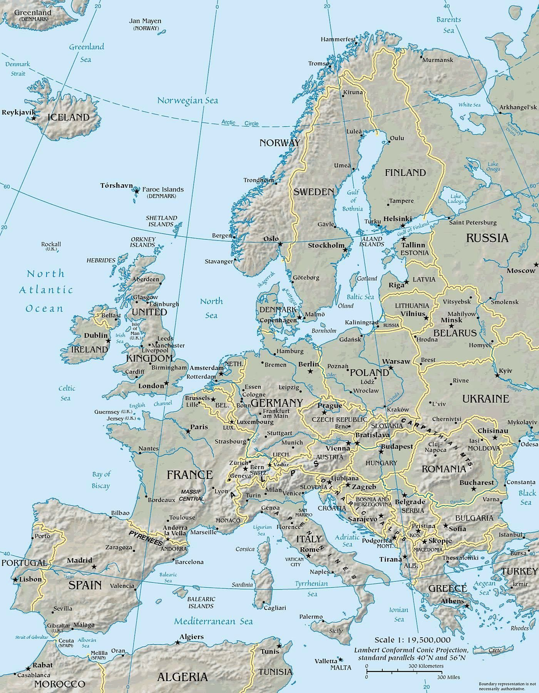

Sizilien ⇄ Bayern · Bio-Spezialitäten, direkt geliefert

Wählt eure Richtung
Palermo
Deutschland
Unsere Produkte in Deutschland
Sizilianische Bio-Spezialitäten & Gelato — direkt zu euch geliefert.
Zum Sortiment Deutschland Palermo Prodotti bavaresi verso la Sicilia — in costruzione. Bald